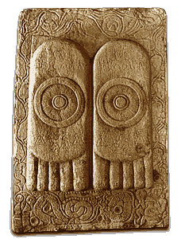

FootprintsA pair of footprints, called the 'Buddhapada' is often used to represent the Buddha. The use of feet as a symbol may be related to the Indian custom of touching the feet of elders to seek their blessing.The Buddhapada sometimes appear on their own and sometimes appear on the footstool of an empty throne. 
This is a relief from the Great Stupa at Amaravati showing the Buddhapada. |